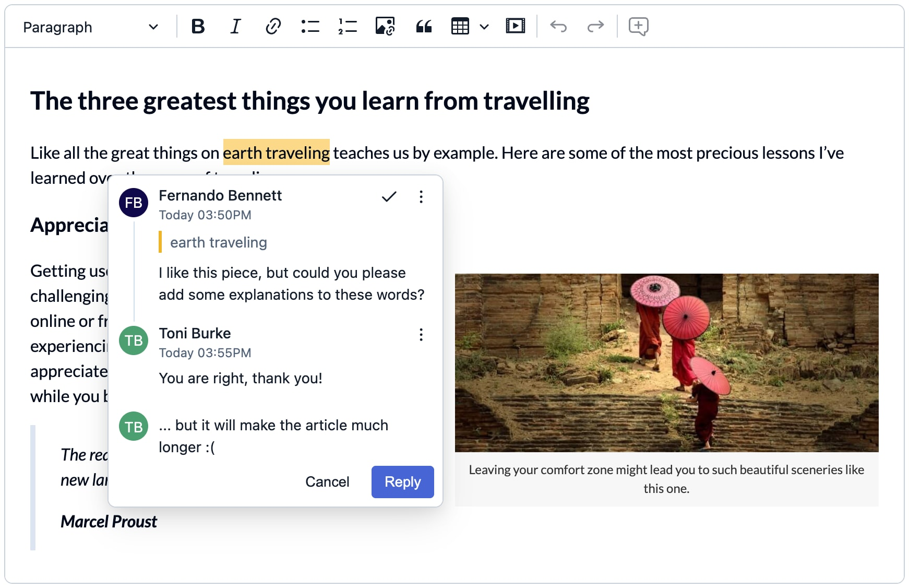
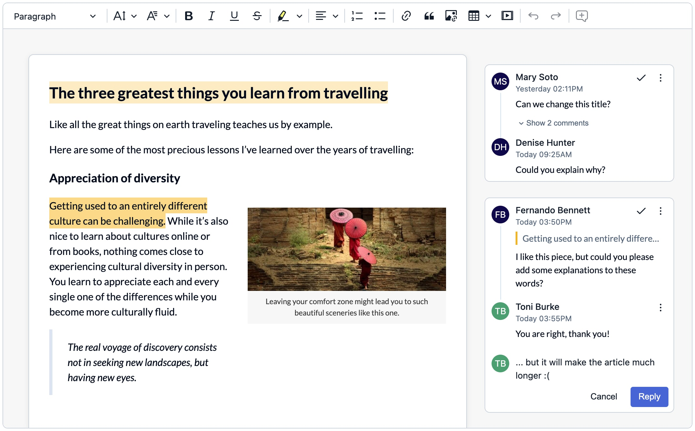
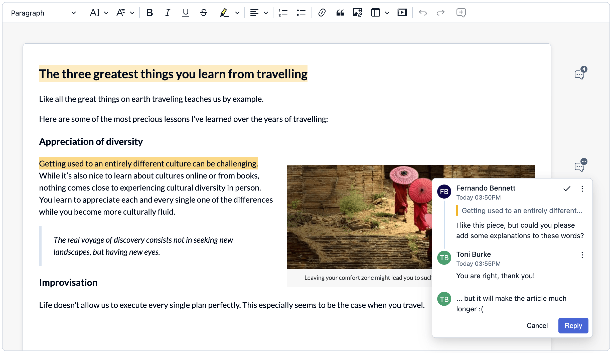

Annotations display mode
There are three built-in UIs to display comment threads and suggestion annotations: the wide sidebar, the narrow sidebar, and inline balloons. You can also display them together in more advanced scenarios where various annotation sources (comments, suggestions) are connected to different UIs, or even create your own UI for annotations.
To create an implementation that includes the comments plugin, refer to the comments integration guide. Alternatively, use an editor from one of the provided samples.
Inline balloon display mode is designed for narrow screens like mobile devices and UIs where the WYSIWYG editor is used to edit a small part of the content.

Inline display mode is the default solution. It is used when the sidebar configuration is not specified.
Even if the sidebar configuration is set, you can still dynamically switch to the inline display mode by calling the switchTo() method with the 'inline' argument:
// ...
ClassicEditor
.create( editorConfig )
.then( editor => {
editor.plugins.get( 'AnnotationsUIs' ).switchTo( 'inline' );
// The sidebar container is not removed automatically,
// so it is up to your integration to hide it (or manage in another way).
document.querySelector( '.editor-container__sidebar' ).style.display = 'none';
} );Currently, the inline balloons UI only works with editor annotations and cannot be used with the context feature.
The wide sidebar can fit the largest amount of information. In this mode the user can see the beginning and the end of each discussion, as well as the entire discussion for the currently selected marker. It is the recommended solution whenever you have enough space for it.

If you came here from the comments integration guide, your editor will already display annotations in the wide sidebar mode and does not require any additional configuration. The instructions below are for scenarios where you need to switch between display modes or customize the sidebar.
To use the wide sidebar for displaying comments and suggestion annotations, first, prepare a proper HTML structure:
<!DOCTYPE HTML>
<html>
<head>
<meta charset="utf-8" />
<title>CKEditor 5 Sample</title>
</head>
<body>
<div class="main-container">
<div class="editor-container editor-container--classic-editor editor-container--include-annotations" id="editor-container">
<div class="editor-container__editor-wrapper">
<div class="editor-container__editor"><div id="editor"></div></div>
<div class="editor-container__sidebar"><div id="editor-annotations"></div></div>
</div>
</div>
</div>
<script type="module" src="./main.js"></script>
</body>
</html>Then update CSS styles to display the sidebar on the right side of the editor:
.editor-container {
--ckeditor5-preview-sidebar-width: 270px;
}
.editor-container__editor-wrapper {
display: flex;
width: fit-content;
}
.editor-container--classic-editor .editor-container__editor {
min-width: 795px;
max-width: 795px;
}
.editor-container__sidebar {
min-width: var(--ckeditor5-preview-sidebar-width);
max-width: var(--ckeditor5-preview-sidebar-width);
margin-top: 28px;
margin-left: 10px;
margin-right: 10px;
}Then, initialize the rich text editor. In the configuration, set the editor to use the <div id="editor-annotations"> element as the comments container.
// ...
const editorConfig = {
// ...
sidebar: {
container: document.querySelector('#editor-annotations')
},
// ...
}
ClassicEditor.create( editorConfig );After setting the configuration as shown in the example above, the wide sidebar display mode will be used. If the display mode was changed, you can change it back by calling switchTo():
ClassicEditor
.create( editorConfig )
.then( editor => {
editor.plugins.get( 'AnnotationsUIs' ).switchTo( 'wideSidebar' );
} );You can also set the sidebar container dynamically using the setContainer() method:
ClassicEditor
.create( editorConfig )
.then( editor => {
editor.plugins.get( 'Sidebar' ).setContainer( element );
} );If the sidebar container has already been set, all the items inside it will be moved to the new container.
The narrow sidebar is a compromise between the wide sidebar and the inline balloons. It does not take as much space as the wide sidebar but contains more information than inline annotations. The user will immediately see when multiple comment threads are added to the same spot as well as how many comments are added.

The HTML structure for the wide and narrow sidebars is similar. The only difference is that you need to set a different min-width CSS property for the #editor-annotations element:
/* ... */
.editor-container__sidebar {
min-width: 65px;
}
/* ... */Then, initialize the editor and switch the UI to the narrowSidebar mode using the switchTo() method. Note that you need to switch the UI type manually since the wide sidebar will be displayed by default.
// ...
const editorConfig = {
// ...
sidebar: {
container: document.querySelector('#editor-annotations')
},
// ...
}
ClassicEditor
.create( editorConfig )
.then( editor => {
editor.plugins.get( 'AnnotationsUIs' ).switchTo( 'narrowSidebar' );
} );Annotations were designed to support displaying various annotations UIs at the same time. This allows you to display different annotation sources in various places, for example, displaying comments in the wide sidebar while showing inline balloons for suggestions.
To activate multiple UIs at the same time, the filtering function should be passed to the activate() method. The function specifies which annotations are controlled by a given UI. Note that one annotation cannot be managed by multiple AnnotationsUI at the same time. If an annotation is not accepted by any of annotations UIs, then that annotation will not be shown.
To use a combination of annotations UIs for displaying comments and suggestion annotations, first prepare a proper HTML structure (for demonstration purposes, the wide sidebar is used):
<html>
<head>
<style type="text/css">
#container {
display: flex;
position: relative;
}
#container .ck.ck-editor {
width: 100%;
max-width: 700px;
}
#sidebar {
min-width: 300px;
padding: 0 10px;
}
</style>
</head>
<body>
<div id="container">
<div id="editor"></div>
<div id="sidebar"></div>
</div>
</body>
</html>Then, initialize the rich text editor using a preset that includes both the comments and track changes features. You can get the necessary code from the track changes integration guide. Then tweak the code to use two annotations UIs as shown below:
// ...
ClassicEditor
.create( editorConfig )
.then( editor => {
const annotationsUIs = editor.plugins.get( 'AnnotationsUIs' );
// Deactivate all UIs first as the `activate()` method might not deactivate all UIs.
annotationsUIs.deactivateAll();
annotationsUIs.activate( 'wideSidebar', annotation => annotation.type === 'comment' );
annotationsUIs.activate( 'inline', annotation => annotation.type !== 'comment' );
} );The code snippet below allows for switching between all available display modes.
Complementary to this guide, we provide a ready-to-use sample available for download. You may use the sample as an example or as a starting point for your own integration. Note that this sample covers not only comments but also track changes suggestions.
The code snippet below needs a setup that includes the comments and track changes plugins. Check out the track changes integration guide to get the code.
In the index.html file obtained from the Builder, add the following markup:
<body>
<!-- ... -->
<div class="buttons">
<button id="inline">Inline</button>
<button id="narrow">Narrow sidebar</button>
<button id="wide">Wide sidebar</button>
<button id="wide-inline">Wide sidebar + inline</button>
</div>
<!-- ... -->
</body>Then, in the style.css file, add the following styles
.editor-container__sidebar {
transition: min-width .4s ease-out-in;
}
.editor-container__sidebar.narrow {
min-width: 65px;
}
.editor-container__sidebar.hidden {
display: none;
}Finally, add the following code in the main.js file:
ClassicEditor
.create( editorConfig )
.then( editor => {
const annotationsUIs = editor.plugins.get( 'AnnotationsUIs' );
const annotationsContainer = document.querySelector( '.editor-container__sidebar' );
const inlineButton = document.querySelector( '#inline' );
const narrowButton = document.querySelector( '#narrow' );
const wideButton = document.querySelector( '#wide' );
const wideAndInlineButton = document.querySelector( '#wide-inline' );
function markActiveButton( button ) {
[ inlineButton, narrowButton, wideButton, wideAndInlineButton ]
.forEach( el => el.classList.toggle( 'active', el === button ) );
}
function switchToInline() {
markActiveButton( inlineButton );
annotationsContainer.classList.remove( 'narrow' );
annotationsContainer.classList.add( 'hidden' );
annotationsUIs.switchTo( 'inline' );
}
function switchToNarrowSidebar() {
markActiveButton( narrowButton );
annotationsContainer.classList.remove( 'hidden' );
annotationsContainer.classList.add( 'narrow' );
annotationsUIs.switchTo( 'narrowSidebar' );
}
function switchToWideSidebar() {
markActiveButton( wideButton );
annotationsContainer.classList.remove( 'narrow', 'hidden' );
annotationsUIs.switchTo( 'wideSidebar' );
}
function switchToWideSidebarAndInline() {
markActiveButton( wideAndInlineButton );
annotationsContainer.classList.remove( 'narrow', 'hidden' );
annotationsUIs.deactivateAll();
annotationsUIs.activate( 'wideSidebar', annotation => annotation.type === 'comment' );
annotationsUIs.activate( 'inline', annotation => annotation.type !== 'comment' );
}
editor.ui.view.listenTo( inlineButton, 'click', () => switchToInline() );
editor.ui.view.listenTo( narrowButton, 'click', () => switchToNarrowSidebar() );
editor.ui.view.listenTo( wideButton, 'click', () => switchToWideSidebar() );
editor.ui.view.listenTo( wideAndInlineButton, 'click', () => switchToWideSidebarAndInline() );
// Set wide sidebar as default.
switchToWideSidebar();
} )
.catch( error => console.error( error ) );The following sample showcases the snippet above:
In addition to the built-in annotations UIs, it is also possible to create a custom UI that will display annotations in a way that is better suited to your application.
Note that annotations UI should implement the AnnotationsUI interface.
The frame of an annotations UI is presented below. For this to work, it must be included in the list of editor plugins and activated. These are the changes that you will have to make to the main.js file of your project:
import { ContextPlugin } from 'ckeditor5';
class CustomAnnotationsUI extends ContextPlugin {
static get pluginName() {
return 'CustomAnnotationsUI';
}
constructor( ...args ) {
super( ...args );
// The `activeAnnotation` property should be defined as an observable property.
this.set( 'activeAnnotation', null );
}
// The `attach()` method should create everything needed for the UI and
// attach all listeners. This method is called when the UI is activated.
//
// The observable collection of annotations is passed as the first argument,
// and the annotations UI is responsible for reacting to its changes.
attach( annotations ) {
// Do something when an annotation is added.
this.listenTo( annotations, 'add', ( evt, annotation ) => { /* ... */ } );
// Do something when an annotation is removed.
this.listenTo( annotations, 'remove', ( evt, annotation ) => { /* ... */ } );
}
// The `detach()` method should destroy the UI and remove all listeners.
// This method is called when the UI is deactivated.
detach() {
this.stopListening();
}
// The `setActiveAnnotation()` method should set or unset the active annotation.
setActiveAnnotation( annotation ) {
if ( this.activeAnnotation ) {
this.activeAnnotation.isActive = false;
// You can do something in your UI with the annotation that is no longer active.
// ...
}
if ( annotation ) {
this.activeAnnotation = annotation;
this.activeAnnotation.isActive = true;
// You can do something in your UI to highlight the active annotation.
// ...
}
}
}
const editorConfig = {
// ...
plugins: [ /* ... */, CustomAnnotationsUI ],
// ...
};
ClassicEditor
.create( editorConfig )
.then( editor => {
const annotationsUIs = editor.plugins.get( 'AnnotationsUIs' );
const customAnnotationsPlugin = editor.plugins.get( 'CustomAnnotationsUI' );
annotationsUIs.register( 'customUI', customAnnotationsPlugin );
annotationsUIs.switchTo( 'customUI' );
} );